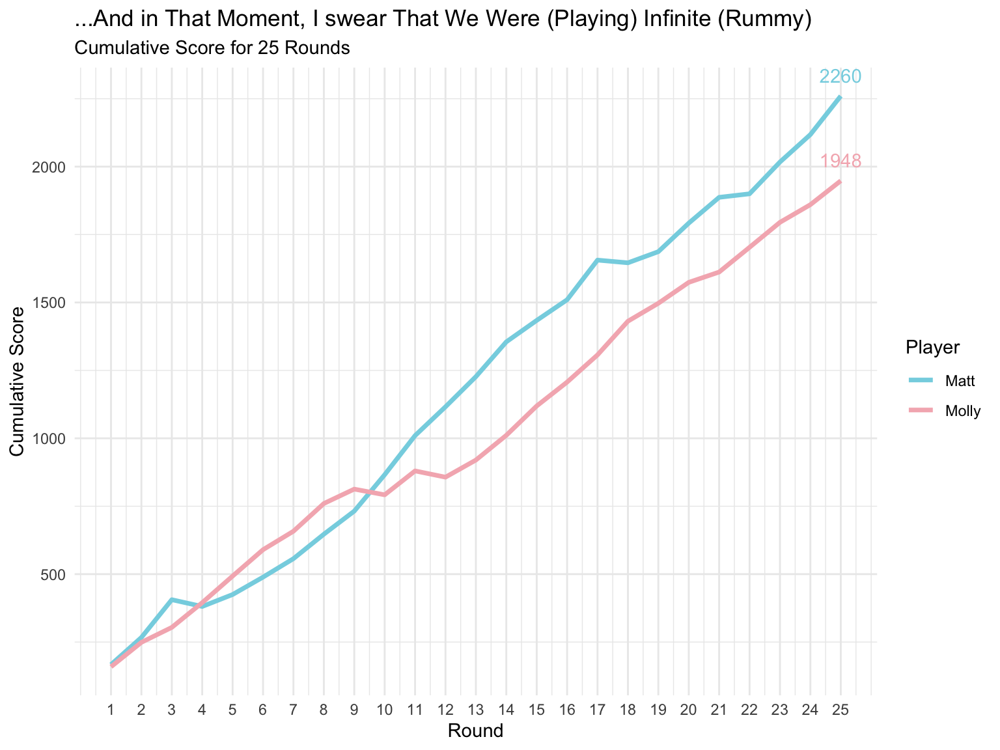
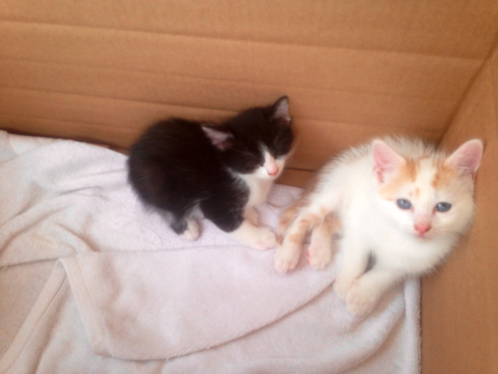

library(tidyverse)
rummy <- tribble(
~Round,~Molly,~Matt,
1,159,167,
2,90,100,
3,55,139,
4,91,-25,
5,98,44,
6,97,64,
7,68,68,
8,102,90,
9,53,85,
10,-21,134,
11,88,144,
12,-23,106,
13,63,111,
14,91,128,
15,108,79,
16,88,76,
17,100,146,
18,124,-10,
19,66,41,
20,77,105,
21,38,95,
22,91,13,
23,92,117,
24,65,101,
25,88,142
)In these unprecedented times, my wife Molly and I have been playing infinite rounds of Rummy ♠️ ♥️ ♣️ ♦️. Since I don’t have any high-quality posts yet (and probably won’t any time soon💩), I’m just going to graph our endless rounds until we’re out of the weeds. My friend and former colleague (and data pro!) Steph showed me how she was graphing nightly games of Rummy 500 with her wife, and I found the idea too fun to not steal 😺!
I spent all weekend getting up and running with the deadly blogdown + Hugo combo, and I’m ready to share my trivial data insights with the world!
Molly and I love board games like 7 Wonders Duel, Codenames, and some good ol’ Catan when we can round up… anyone else…but we have quickly come to terms that we’ll be riding out the stay at home order for quite a while.
(If you’re only looking for cats and kittens, scroll to the end)
Let’s take a first glimpse at our scorecard data:

While the raw data explicitly shows that I’m a loser, we’ll see if that’s actually the case after some cleaning and viz.
Here’s a tribble of our cumulative rounds:
To build some suspense before we get to the cumulative sum and see who the real loser 😭 is, we actually need to utilize one of my new favorite functions pivot_longer(), which will help us visualize our rounds.
rummy_wider <- rummy %>%
pivot_longer(cols = c("Molly","Matt"), values_to = "Score") %>%
rename(Player = name)Now our data looks like this:
| Round | Player | Score |
|---|---|---|
| 1 | Molly | 159 |
| 1 | Matt | 167 |
| 2 | Molly | 90 |
| 2 | Matt | 100 |
| 3 | Molly | 55 |
| 3 | Matt | 139 |
Nice! Let’s have a first look at how we stack up round-to-round:
library(wesanderson)
rummy_wider %>%
group_by(Player) %>%
ggplot(aes(x=Round,y=Score,group=Player,color=Player)) +
scale_x_continuous(breaks = seq(1,25,1)) +
geom_line(size=1.25) +
scale_color_manual(values=wes_palette(name = "Moonrise3")) +
theme_minimal() +
labs(title = "...And in That Moment, I swear That We Were (Playing) Infinite (Rummy)",
subtitle = paste0("Score by Round for ",max(rummy_wider$Round)," Rounds")) 
Last night during a bout of insomnia, I came across the new CRAN release for ggbump and had to give it a shot, and am pretty excited to find some more uses for it. This definitely isn’t the best visualization I’ve made, and would have been more interesting with a third player (maybe the thruple from HGTV’s House Hunters?)
Anyway, to work with ggbump, we just need to rank each round. We did tie during round 7, so ties.method = random will make the decision for us.
library(ggbump)
library(cowplot)
library(wesanderson)
rummy_bump <- rummy_wider %>%
group_by(Round) %>%
mutate(rank = rank(Score,ties.method = "random")) %>%
ungroup()
ggplot(rummy_bump, aes(Round,rank,color = Player)) +
geom_point(size = 7) +
geom_bump(size = 2, smooth = 4)+
scale_x_continuous(limits = c(-0.6,25.6),breaks = seq(1,25,1)) +
theme_minimal_grid(font_size = 14, line_size = 0)+
theme(panel.grid.major = element_blank(),
axis.ticks = element_blank()) +
scale_y_continuous(breaks = c(1,2), labels = c("1" = "Loser", "2" = "Winner")) +
labs(y = "") +
scale_color_manual(values = wes_palette(n=2, name = "Moonrise3"))
I know I said it’s not the best visualization I’ve made, but I still think it looks pretty cool, and is easy enough to see the change from win to loss.
And now, the moment you’ve all been waiting for!
Here’s the current scoreboard for wins per round:
scoreboard <- rummy_bump %>%
mutate(Wins = rank - 1,
Wins = ifelse(Wins == 0,"Loss","Win")) %>%
arrange(desc(Wins)) %>%
select(Player,Wins)
kable(table(scoreboard))| Loss | Win | |
|---|---|---|
| Matt | 10 | 15 |
| Molly | 15 | 10 |
We still haven’t decided how we’re going to end the game, and with no end to the pandemic in sight, we still have a lot more Rummy in our future. Should we play Rummy 5,000? 25,000? BILLIONS?🙄
And one more graph of our cumulative scores, for good measure:
cumulative <- rummy_wider %>%
group_by(Player) %>%
mutate(Cumulative = cumsum(Score))
cumulative %>%
group_by(Player) %>%
ggplot(aes(x=Round,y=Cumulative,group=Player,color=Player)) +
scale_x_continuous(breaks = seq(1,25,1)) +
geom_line(size=1.25) +
geom_text(data = cumulative %>%
group_by(Player) %>%
arrange(desc(Cumulative)) %>%
slice(1),
aes(label = Cumulative), show.legend = FALSE,vjust=-1) +
scale_color_manual(values=wes_palette(name = "Moonrise3")) +
theme_minimal() +
labs(title = "...And in That Moment, I swear That We Were (Playing) Infinite (Rummy)",
subtitle = paste0("Cumulative Score for ",max(cumulative$Round)," Rounds"),
y = "Cumulative Score")
And as a final note, this post and website were conceptualized on 4/26, which is Phil and Mango’s 5th birthday!! 👽
🎂 🎈 🎁 HAPPY BIRTHDAY TO MANGO AND PHIL!🎂 🎈 🎁
